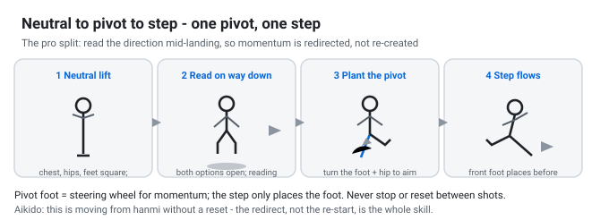
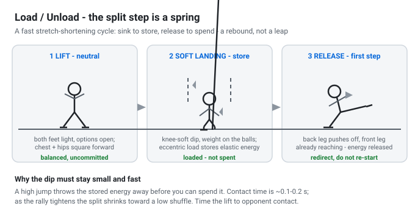
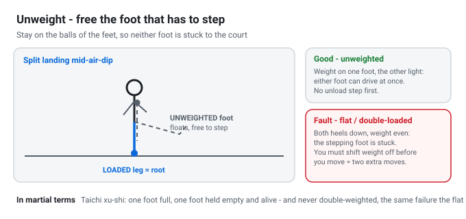

The Split Step: Load, Unload, Redirect
Thesis in one line: The split step is the tennis body doing three things at once — it loads then unloads the legs through a controlled spring, it unweights the foot that is about to step so that foot is free to move, and it does all of this while keeping you in dynamic balance on a neutral platform, so you can change direction the instant you read the ball. Everything a martial art calls xu-shi (full/empty), a "soft knee", fa-jin coil-uncoil, or hanmi neutrality is the same biomechanical event wearing a different jacket.

What the Split Step Actually Is
Two completely different movements get called "the split step," and the difference is the whole story:
- The naïve split step (what most recreational players are taught): jump straight up, land straight back down with both feet hitting at the same time, flat and even. From there you have to lift one foot, pivot it, and then start moving. Every shot therefore costs three serial events — down, pick a foot, then go — which is why movement feels late, clunky, and reactive.
- The pro split step (Federer, Djokovic): as the opponent strikes, you lift into a neutral platform — chest, hips and both feet facing forward so you can go either way — and then, on the way down, before the feet have fully landed, you are already reading the ball. The non-pivot foot never fully plants; it floats over the court while the pivot foot does the work of redirecting momentum. "Just lift, read, plant, and flow." One pivot and one step cover half the court (Essential Tennis, "How to Flow Like Federer").
So the elite split step is not a jump. It is a brief, soft, low bounce timed to the opponent's contact that leaves you loaded but uncommitted. That phrase — loaded but uncommitted — is the core of the whole article.
The Five Jobs of the Split Step
| # | Job | One-line meaning |
|---|---|---|
| 1 | Load / unload | Store elastic energy on the landing dip, release it into the first move. |
| 2 | Unweight | Take the load off the foot that is about to step, so it can actually step. |
| 3 | Redirect in balance | Change the center of mass toward the ball without falling over or breaking posture. |
| 4 | Neutralize | Face both directions so no commitment is made before the read. |
| 5 | Time the read | Sync the landing to the moment of opponent contact. |
Jobs 1–3 are the biomechanics; 4–5 are the decisions that make the biomechanics useful.
The Biomechanics
1. Load / Unload — The Stretch-Shortening Cycle (SSC)
The landing of the split step is a fast, small counter-movement: the ankle, knee, and hip bend eccentrically (lengthen under load) and then immediately reverse concentrically. When a muscle–tendon unit is pre-stretched and then immediately shortens, it produces more force and power than a contraction from rest. This is the stretch-shortening cycle (SSC) — the same mechanism that makes a counter-movement jump higher than a squat jump and that puts the "spring" in plyometric and running gait (foundational work by Cavagna, Komi, and Bosco). Energy is stored briefly in the elastic tendon and series-elastic components, reinforced by neural potentiation from the stretch reflex:
- The split's "load" is the controlled, quiet dip — knees soft, weight on the balls of the feet, a short ground-contact time (roughly a 0.1–0.2 s bounce).
- The "unload / explode" is the release of that stored elastic energy into the first step or into the stance leg that will catch the shot.
Two coaching consequences follow directly:
- Keep the dip small and fast: A big, high jump looks athletic but throws away time and dumps stored elastic energy before you can use it; the split is a rebound, not a leap. As the rally tightens, the split shrinks toward a low shuffle or a split-lean.
- Land soft, then leave the ground on purpose: The energy you do not keep, you cannot return. This is why "knees forever bent" and "heels up" recur in every elite coaching cue.

2. Unweight — Freeing the Foot That Steps
You cannot push off a foot that you are standing flat on. To step to your right you must (a) move your center of mass to the right and (b) be able to lift the right foot. If your weight is fully carried by that right foot, heel down, you first have to shift all the weight off it before you can push off the left one — you spend the split doing nothing but re-positioning weight.
This is the unweighting job. By staying on the balls of the feet with soft knees, no foot is "loaded to the floor," so:
- Either foot can drive off instantly, and
- The foot that does not drive — the non-pivot foot — can float and simply be placed where it is needed (Federer's trademark: "non-pivot foot never fully plants, it floats").
The essential-tennis student is the textbook example of getting this wrong: he was splitting, was unweighting, had his heels up — but both feet still came fully down before he decided which way to go. So he had to lift one foot, then the other, then move: two extra moves on every shot. The fix is to read the direction during the landing and let the pivot foot start redirecting momentum before the other foot finishes contacting the court — "lift, read, plant, and flow."

Nomenclature & Movement Terminology: In professional coaching, freeing the stepping foot is known as unweighting. It encompasses staying light on the balls of the feet, lifting the heels, and discharging loads to avoid double-weighting. For the complete cross-lingual lexicon, see the TFL Glossary.
3. Redirect While Staying in Balance
Moving sideways is a balance problem, not just a speed problem. To accelerate your center of mass toward the ball you push against the ground; the ground reaction force (GRF) comes up through the foot, and wherever that foot points is where the force goes. So the pivot foot is a steering wheel for your momentum — turn it (through the hip) and the next force you push with is already aimed.
Balance holds because, at the instant you push, your center of mass is carried over the single leg that pushes and then over the single leg that lands — you are in and out of single-leg support (weight on one foot at a time). This is dynamic balance, and it is the only kind worth having on a court. Static balance (both feet planted, weight centred) has no use in dynamic tennis. As Tennis Without Talent puts it: you want to be weight-on-one-foot, knees forever bent, harvesting momentum from the earth while the upper body floats.
The elegant version of this is what makes the pros look slow-motion: one pivot plus one step. The pivot turns the momentum; the step only has to place the foot, not create the move from a standstill. Creation from standstill is slow; redirection is cheap.
4. Timing — Synced to Contact
Where the split sits relative to the opponent's strike is the whole ballgame:
- Too early: You have already landed, reset, and gone static before you have read the shot — you are now the naïve split (down before decided), starting from zero.
- Too late: You are still rising or already committed when the ball is struck, and you cannot redirect.
The window is narrow: begin the lift as you read the incoming stroke, be loaded and neutral just as the ball is struck, and read the direction during the landing. Near the net (volleying), the split shrinks into a low shuffle or a split-lean; a full bounce is too tall and slow for close-quarters exchanges.
5. The Neutral Platform
Lifting with chest, hips, and feet squared forward is not stylistic. It is the geometry that keeps both options open with zero re-aim. Commit early — face one way, load one foot, angle one knee — and the read is wasted, because now your balance has to be unwound before it can be re-wound. Neutrality is the physical form of "don't decide until you know."
The Recurring Faults (A Diagnostic List)
- Straight-up, straight-down, both feet flat together: The naïve split; serialises the move into three disjointed steps (land → pick foot → run).
- Both feet fully planted before the read: The Essential-Tennis fault; grounds both feet and costs two extra recovery moves.
- Landing too high / bounding: Wastes precious time in the air and dumps stored elastic energy before contact.
- Heels down / flat-footed landing: Kills unweighting; the stepping foot is pinned to the court.
- Committing early (pre-facing): Turning shoulders/hips before opponent contact; leaves you helpless against counter-direction shots.
- Full stop between shots (resetting from scratch): Standing static after hitting. Great movers like Djokovic and Nadal use their shuffle recovery as the next split step — they never stop and never reset from zero.
The Martial Thread: Three Pillars into One
The split step is where the TFL thesis — dynamic balance, flexibility, recovery — becomes concrete. Each of its functions has an exact biomechanical equivalent in classical martial arts:
| Split-step function | Taiji / Chinese Internal | Aikido / Japanese |
|---|---|---|
| Load/unload (SSC dip and release) | Fa-jin — the coil-then-issue from the foot (soft sink, then power leaves from the ground). | Kokyu / the springy, elastic body; enter and rebound. |
| Unweight the stepping foot | Xu–shi (full/empty) — one foot carries the load while the other is empty and alive; never double-weight. | Hanmi triangle (60/40 split) — the light foot free to glide and step. |
| Soft, perpetual knee-bend; heels light | "Keep knees soft, root in the foot" while the upper body stays light. | Soft-knee Seigan stance; ready to shift either way. |
| Redirect momentum with pivot foot / hip turn | "The waist is the master" — a step is the waist's rotation reflected at ground level. | Irimi (enter) and Tenkan (pivot/turn) — the two phases of every displacement. |
| Stay in motion, stay neutral, never reset | Seek stillness within movement; never break the chain (tương liên bất đoạn). | Move continuously between postures; Ma-ai decides timing. |
| Weight on one foot at a time = dynamic balance | Single-weighting as the only true functional balance. | Tenshin / Kokyu-ryoku operating on a single supporting leg. |
The one-sentence bridge: The split step is your hanmi on the tennis court — a small, soft, neutral bounce that loads the legs like a coiled spring, keeps the other foot unweighted and alive, and hands you a single-leg base from which to redirect — exactly the dynamic balance / rotational flexibility / continuous recovery loop described in the martial texts, compressed into 0.2 seconds between your opponent's contact and yours.
Making It Teachable
- "Lift, Read, Plant, and Flow" Drill: Partner stands at the service line holding a ball in each hand. You split; partner drops a ball to either side unannounced. Your task is to read the direction on the way down and plant the pivot foot while the other floats and flows — before both feet finish contacting the court. Zero extra steps.
- "Never Reset from Scratch" (Djokovic / Nadal Shuffle Recovery): Recover out of wide shots with continuous shuffle steps, timing the final landing of the shuffle recovery to serve as the next split step the instant your opponent strikes. Eliminate the habit of stopping and admiring your shot.
- "Shrink the Split" Net Approach Drill: Approach the net from baseline; at the service line, shrink the hop into a low shuffle, and when closing in for the volley, degrade it into a rapid split-lean without rising off the court.
- Sound Check — "Land Like a Cat": The ultimate test of a good split step is sound. If the landing thuds, the hop is too high or the legs are stiff. Land silently on the balls of the feet.
- Serve Return Rhythm Drill: Split on the server's toss (pre-loading elastic tension), then execute a second micro-adjustment split right at racquet-ball contact to calibrate return trajectory.
Sources & Caveats
- Ian Westermann, How to Flow Like Federer In Tennis Footwork Lesson, Essential Tennis (essentialtennis.com) — neutral platform, read on the way down, the floating non-pivot foot, the "both feet down before deciding" fault, and the lift/read/plant/flow drill.
- Ian Westermann, Nadal's Footwork Drill / "He Never Stops" (essentialtennis.com) — recovery as the next split step; never reset from scratch.
- Mouratoglou Academy Coaching Corner — footwork technique and ground contact drills.
- Tennis Without Talent — Stance and Balance chapters: dynamic balance as "weight on one foot at a time", the "power wave" from ground to hip to wrist, and continuous recovery.
- Cavagna, Komi & Bosco — classic literature on the stretch-shortening cycle (SSC) and elastic energy recoil.
- The thirteen bilingual martial arts books on the TaichiKB Library (Yang Chengfu's Ten Essential Points, Yang Jwing-Ming, Paul Crompton, Gozo Shioda, Bodo Rödel) for xu-shi, hanmi, irimi-tenkan, and ma-ai mechanics.
- TFL Footwork Research Project: The Root in the Foot, The Common Thread, and the TFL Glossary.
Caveat: Quotes attributed to coaches reflect pedagogical cues; explanations of the stretch-shortening cycle (SSC), ground reaction forces (GRF), and center-of-mass kinematics are established exercise physiology. Ground contact times (~0.1–0.2s) are orders of magnitude, not rigid personal prescriptions.
TFL Footwork Research Project | The Common Thread (synthesis) →